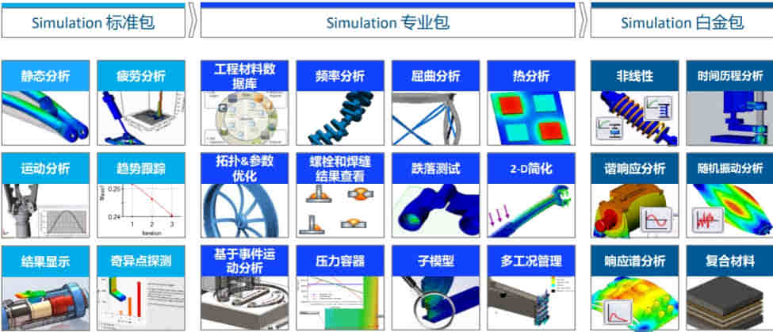
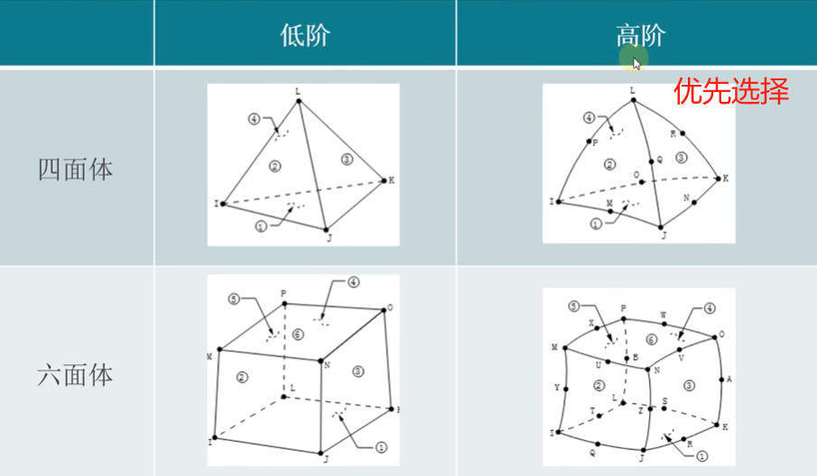

Simulation简介
有限元分析（FEA）：使用有限元分析来计算零件和装配体在内部和外部载荷下的应力和位移。
产品矩阵算例
静力学分析
在有限元分析中，要确保静态分析，除了载荷静态之外，有一个非常重要的因素:整个结构所有的部件都必须保证静态，不能存在可能发生的运动趋势。
刚体运动：案例：轴扭矩受力分析；
高工经验分享：5分钟教会你轴类零件的静应力分析！_哔哩哔哩_bilibili
疲劳分析
通过检查重复或随机负载循环来预测组件疲劳失效。
热分析
计算组件内部和组件之间的温度和传热。
与Flow Simulation功能相似（优先选Flow），热分析简化了对流系数的描述，简化了流体流动和分布的情况用对流系数简化了。
线性应力分析
计算零件和装配体因内部和外部载荷而产生的应力和变形，以在设计时验证产品性能和安全性。
非线性分析
分析一般载荷和材料条件下几何形状的应力和变形。
动态：非线性仿真丨SOLIDWORKS Simulation冲压成型工艺仿真分析方法 - 知乎 (zhihu.com)
振动分析
检查振动或不稳定模式如何缩短设备寿命以消除故障。
频率分析
确定边界条件并确保自然振动模式远离环境强迫频率。
动态分析
确定时变荷载对设计结构响应的影响。
与motion区别：动态包含motion+变形体的振动仿真。motion只能是刚体表现
结构优化
优化设计以满足定义的强度重量比、频率或刚度性能。
屈曲分析
研究有和没有环境载荷的设计的屈曲强度，以确保其满足产品对强度、性能和安全性的要求。
跌落测试
11
压力容器算例
11
基础知识
基础知识
高等数学 线性代数 概率统计 材料力学
数学理论
有限单元法 差分法 张量分析 数值方法
力学理论
流体力学 热力学 弹性力学 断裂力学
设计理论
机械设计 机械原理产品 设计理论 行业标准
相关概念
强度
四大强度理论：
第一强度理论:
最大拉应力准则基本观点:材料中的最大拉应力到达材料的正断拉力时，即产生脆性断裂适用范围:铸铁，工具钢，工业陶瓷等多数脆性材
第三强度理论:最大剪应力准则
基本观点:材料中的最大剪应力到达该材料的剪切抗力时，即产生塑性屈服。适用范围:低碳钢、铜、软铝等塑性较好材料。
第四强度理论:形状改变比能准则
基本观点:材料中形状改变比能到达该材料的临界值时，即产生塑性屈服。适用范围:它既突出了最大主应力对塑性屈服的作用，又适当考虑了其它两个主应力的影响，它与塑性较好材料的试验结果比第三强度理论符合得更好。
应力
[应力 - 2021 - SOLIDWORKS 帮助](https://help.solidworks.com/2021/chinese-simplified/solidworks/cosmosxpresshelp/c_Stress.htm#:~:text=SX、SY 以及 SZ 称为正应力。 TXY、….、TZY 称为剪应力。 剪应力的关系如以下方程式所示：TXY %3D,TYX、TXZ %3D TZX 和 TYZ %3D TZY。 因此某点的应力状态要通过六个分量来完整定义。)
应力集中
应力集中是设计汇程师在设计产品过程中不可避免的问题。指受力构件由于外界因素或自身因素几何形状、外形尺寸发生突变而引起局部范围内应力著增大现象。多出现于尖角、孔洞、缺口、沟槽以及有刚性约束处及其邻域。
应力奇异性
受力体由于几何关系，在求解应力函数的时候出现的应力无穷大。根据弹性理论，在尖角处的应力是无穷大;由于离散化误差，有限元模型并不会产生无穷大的应力结果，而会形成本例中随着网格的细化，得出的应力值大幅度增加的现象。应力奇异是数学算法问题。应力奇异点一般出现在刚性约束和尖角处。注意:应力集中和应力奇异不是必须显示红色。
位移
挠度（刚度）
应变
应力应变曲线

1弹性阶段（Elastic）
弹性模量(杨氏模量)：几乎所有的材料都会有弹性阶段，弹性阶段的特点：施加的应力与应变成正比，这个比值也就是之前所说的弹性模量
同样站在等体积的砖块和海绵上，海绵的变形肯定比砖块要大，这个差异就是抗变形能力。相同的应力条件下，应变越小，则抗变形能力越强。这样的抗变形能力，我们称之为模量。模量的单位和应力一致，为帕斯卡/兆帕/G帕。模量分为很多种，最常用的就是杨氏模量，由托马斯·杨在1807年提出
2屈服阶段（Yield）
一般来说，屈服阶段只会出现在韧性金属材料中。达到了某个应力值，应变会有一个明显的小平台阶段，意味着在此时材料开始发生永久性的变形，并且这种变形在不受力之后也无法回复到最初的形态。
在弹性阶段过后没有后续的屈服，直接脆断。我们称这种性质为脆性材料。如铸铁、钻石、
3强化阶段（Strengthening）
4颈缩阶段DE
4失效阶段（Failure）
剪切应力
说明：
计算公式：
例子：
1 | 剪切应力=作用扭力 (F)/作用面积（A） |
1 | 作用扭力 (F)=转矩 (T)/作用半径 (R)/平均到8个螺丝 |
58.333/0.00049085
耦合
耦合分析是指在有限元分析的过程中考虑了两种或者多种工程学科(物理场)的交叉作用和相互影响(耦合)，根据分析的结合顺序分为单向耦合和双向耦合两种

Q&A
单元阶数和自适应
实体单元类型：
自适应网格:通过电脑自动计算控制网格精度的网格技术。是手动网格控制的一种平替方法，（手动细化网格是优优先）
H方法（优先）采用简单的形状函数，阶数不变，通过增加节点和单元数量提高计算精度。
P方法采用比较复杂的形状函数，即通过增加节点增加单元阶数，而单元数量不变提高计算精度。